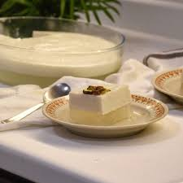

Tender Coconut Pudding Recipe

Tender Coconut Pudding is a delightful dessert made with fresh coconut water, tender coconut meat, and a few simple ingredients. It's a light and refreshing treat, perfect for warm weather.
Ingredients
- 1 cup tender coconut water
- 1 cup tender coconut meat, chopped
- 1/2 cup sugar (adjust to taste)
- 1/4 cup cornstarch
- 1/4 cup water
- 1/2 tsp vanilla extract
- Fresh mint leaves for garnish
Instructions
- In a saucepan, combine the tender coconut water and sugar. Heat gently until the sugar dissolves.
- In a separate bowl, mix the cornstarch and water to form a slurry.
- Slowly add the cornstarch mixture to the saucepan, stirring continuously until the mixture thickens.
- Remove from heat and stir in the chopped tender coconut meat and vanilla extract.
- Pour the mixture into serving cups and refrigerate until set.
- Garnish with fresh mint leaves before serving.